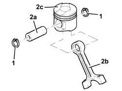
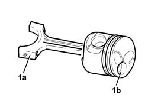

1028H54 PISTON with CONNECTING ROD - Separation at the bench
- Path
- Procedures > 10 ENGINE > 1028 PISTONS AND CONNECTING RODS > 1028H PISTONS AND CONNECTING RODS > 1028H54 PISTON with CONNECTING ROD - Separation at the bench
- Kind
- repair procedure (removal / refitting; the operation number is the code)
- Applies to
- engines: 2.4 JTD 10V; all production periods
- Interactive page
- https://sloeber94.github.io/elrnDB-lThss/en/#/502268
Applies to: all engines; all production periods
 Removing
Removing
 Refitting
Refitting1. Remove the piston rings.
2. Release the pin (2a) and separate the connecting rods (2b) from the pistons (2c).

Applies to: all engines; all production periods
Refitting
Removing1. Join the connecting rods with the pistons so that the number stamped on the big end (1a) is facing the combustion chamber (1b) in the piston.
- Fit the pins and secure them using the circlips.
